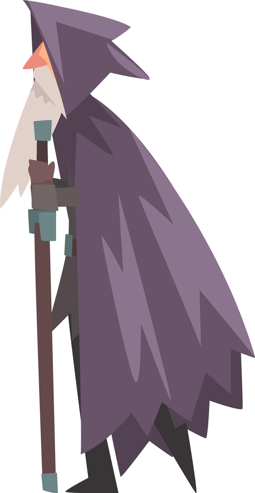
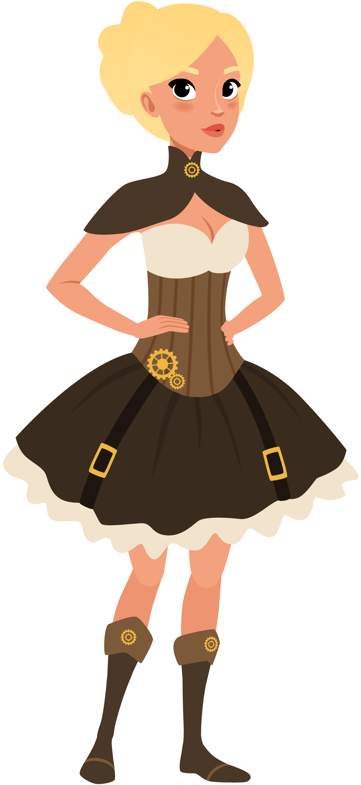
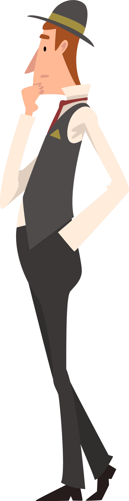

Ivan (or Vanka) is 24 years old, the first son from Fyodor's second marriage - and thus, an aloof middle child in the Karamazov family. As both an imaginative and exacting thinker, Ivan raises big questions through his artistic creations, such as the Grand Inquisitor; but, such a free-thinking mind eventually proves to be his undoing. Quietly smitten by Katerina, Dmitri's ravishing betrothed, Ivan nonetheless withholds his affections from her - and everyone else - out of a sense of guarded pride. Eventually, however, Pavel breaks through Ivan's detachment, confronting him with the most sinister consequences of his beliefs.

A 90-year-old leader of the Spanish Inquisition, the Grand Inquisitor meets and challenges Jesus Christ to reconsider the consequences of freeing men from the Old Testament law and superstition. Deeming the gospel ethic of love to be inadequate guidance for unruly men, the Grand Inquisitor proclaims that the Roman Catholic Church will recover the happiness of men through impositions of "miracle, mystery and authority". His condemnation of Christ is founded on the doctrine that free will, God's supposed gift to mankind, has brought about the sufferings of men.

As a spurned fiancée, the gorgeous Katerina (or Katya) seeks nonetheless to uphold her dignity, through a self-lacerating commitment to the wayward Dmitri. The proud expectation that her love will be requited eventually proves to be too much for her to handle, as Ivan renders her passions unchecked - but not in animal lust. Throughout the narrative, Katerina faces a journey of self-discovery.

With even his paternity shrouded in mystery, the enigmatic, 24-year-old Pavel (or Smerdyakov) proves to be more than the rustic lackey that almost everyone supposes him to be. He serves Fyodor - his alleged sire - in a disinterested manner, but truly engages with Ivan, whom he deems "a clever man" worthy of emulation. Being prone to epileptic fits, Pavel despises his own sense of vulnerability, while simultaneously wielding a morbid, self-effacing sense of humour.